शाळा व्यवस्थापन प्रणाली — VidyaSetu
संपूर्ण मराठी माहितीपुस्तक
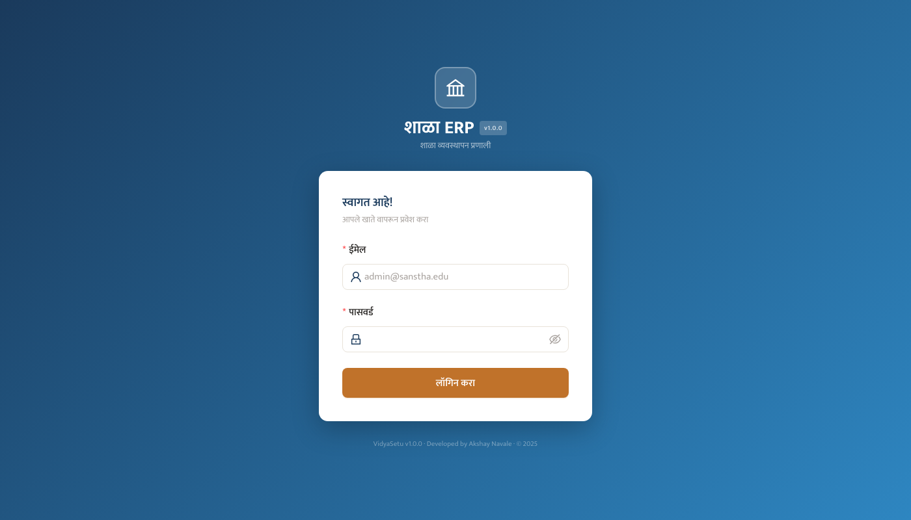
app.vidyasetu.in)director@sanstha.edu)पासवर्ड चौकटीतील डोळ्याच्या चिन्हावर क्लिक करून पासवर्ड पाहू शकता
तुमचा पासवर्ड कोणाशी शेअर करू नका. तीन चुकीच्या प्रयत्नांनंतर खाते लॉक होऊ शकते
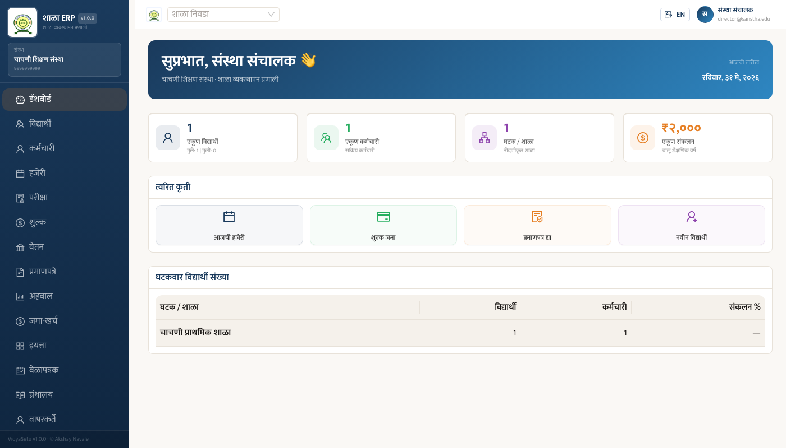
| विभाग | माहिती |
|---|---|
| एकूण विद्यार्थी | शाळेतील नोंदणीकृत विद्यार्थ्यांची संख्या (मुले / मुली) |
| एकूण कर्मचारी | सक्रिय शिक्षक व शिक्षकेतर कर्मचारी |
| घटक / शाळा | संस्थेच्या अंतर्गत एकूण शाळांची संख्या |
| एकूण संकलन | चालू शैक्षणिक वर्षातील शुल्क संकलन |
एका क्लिकने हजेरी पृष्ठावर जा
विद्यार्थ्याची फी त्वरित घ्या
बोनाफाईड / टीसी तयार करा
नवा विद्यार्थी थेट नोंदवा
डाव्या बाजूला सर्व विभागांचे मेनू दिसतात. त्यावर क्लिक केल्यावर त्या विभागात जाता येते.
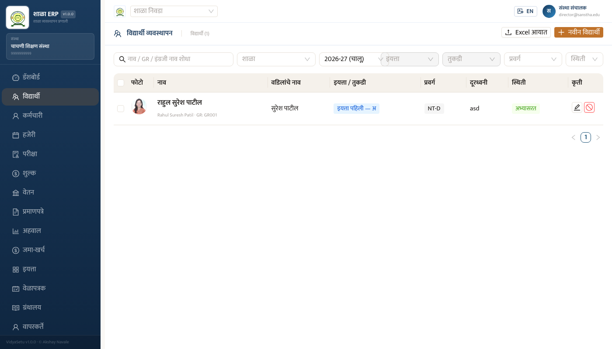
शोध चौकटीत नाव किंवा GR क्रमांक टाका — यादी आपोआप फिल्टर होईल
कोणत्या शाळेचे विद्यार्थी पाहायचे ते निवडा
विशिष्ट इयत्तेचे विद्यार्थी पाहण्यासाठी इयत्ता निवडा
Excel फाइलमधून एकत्र विद्यार्थी नोंदवा — वरील Excel आयात बटण वापरा
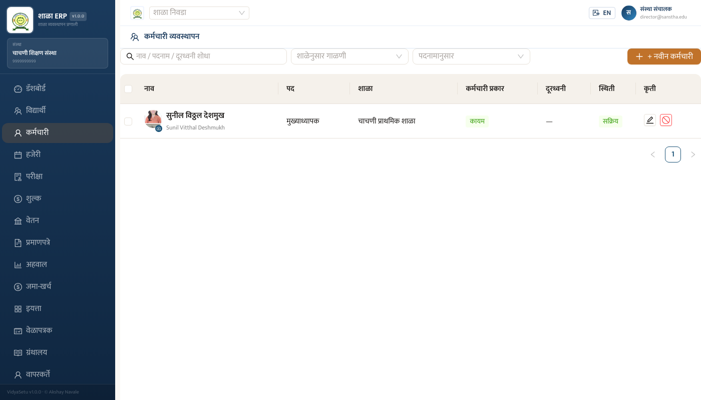
| स्तंभ | माहिती |
|---|---|
| नाव | मराठी व इंग्रजी नाव — फोटोसकट |
| पद | कर्मचाऱ्याचे पदनाम (मुख्याध्यापक, सहायक शिक्षक इ.) |
| शाळा | कोणत्या शाळेत कार्यरत |
| कर्मचारी प्रकार | कायम / अनुदानित / विनाअनुदान इ. |
| स्थिती | सक्रिय / निष्क्रिय |
| कृती | संपादन / निष्क्रिय करणे |
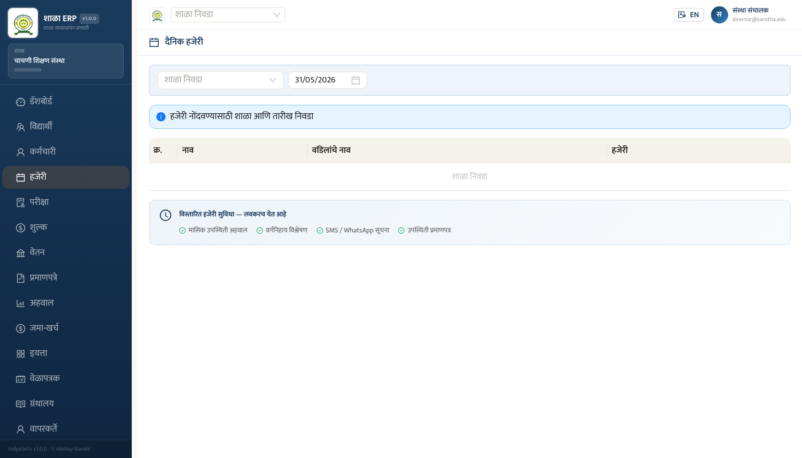
विद्यार्थी शाळेत आला — हिरव्या बटणावर क्लिक करा
विद्यार्थी आला नाही — लाल बटणावर क्लिक करा
विद्यार्थी उशिरा आला — उशिरा बटण दाबा
वर उपस्थिती टक्केवारी व एकूण संख्या दिसते
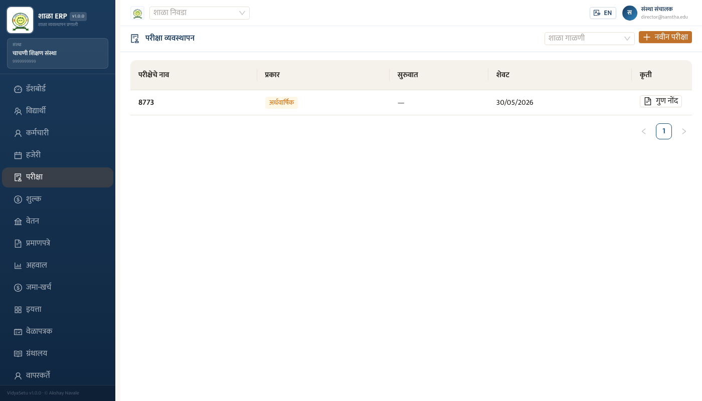
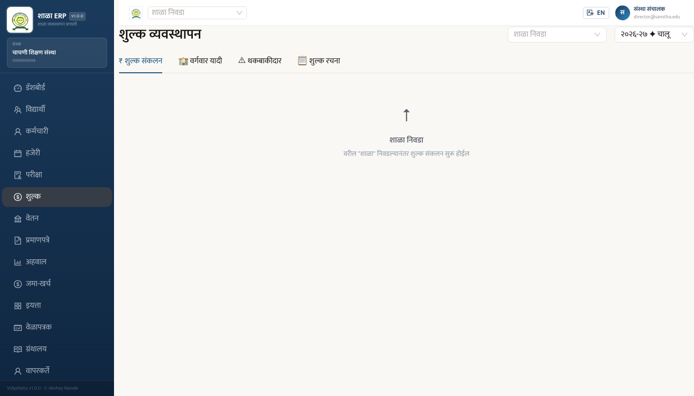
इयत्तानिहाय विद्यार्थ्यांची शुल्क स्थिती एकत्र पाहा
शुल्क न भरलेल्या विद्यार्थ्यांची यादी — SMS पाठवण्याची सुविधा
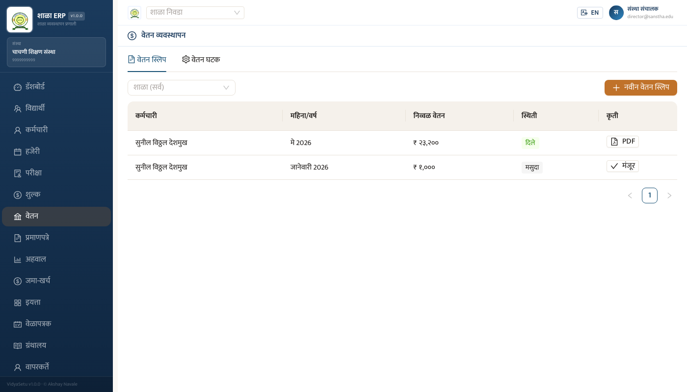
कर्मचाऱ्याला देण्यासाठी PDF वेतन स्लिप डाउनलोड करा
मागील महिन्याचे वेतन आपोआप भरते — फक्त तपासा
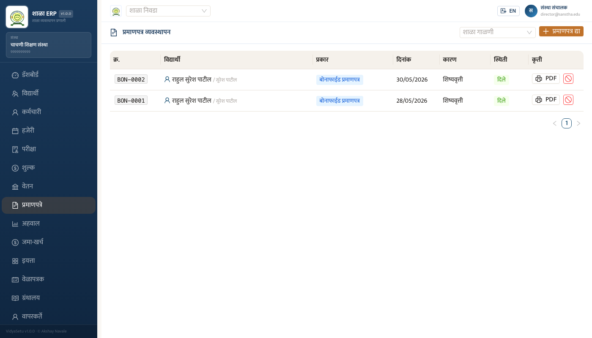
| स्तंभ | माहिती |
|---|---|
| क्र. (BON-XXXX) | प्रमाणपत्राचा अनुक्रमांक |
| विद्यार्थी | विद्यार्थ्याचे नाव व पालकाचे नाव |
| प्रकार | बोनाफाईड / TC |
| दिनांक | प्रमाणपत्र दिल्याची तारीख |
| कारण | देण्याचे कारण |
| स्थिती | दिले / रद्द |
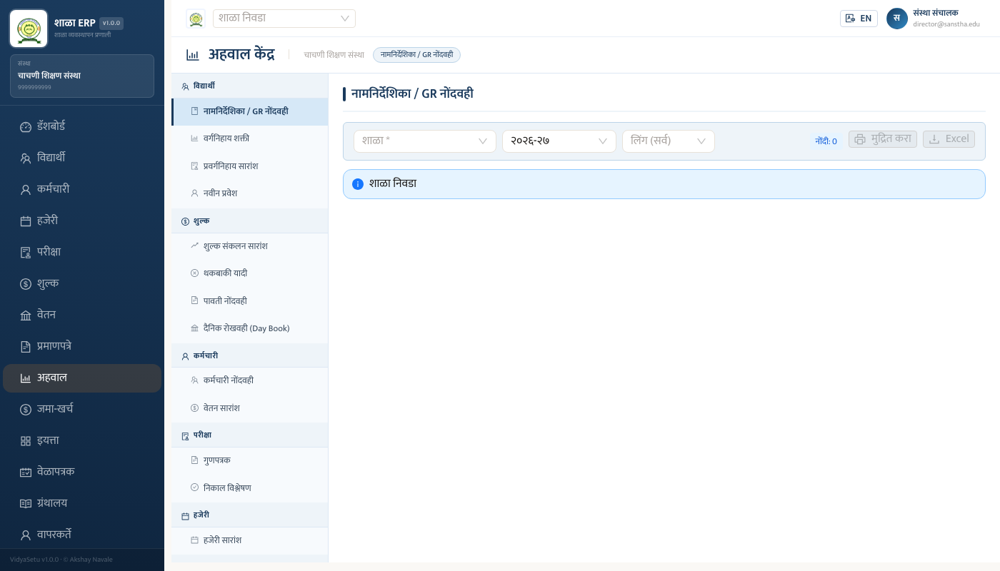
| विभाग | अहवाल नाव | उपयोग |
|---|---|---|
| विद्यार्थी | नामनिर्देशिका / GR नोंदवही | सर्व विद्यार्थ्यांची यादी — मुद्रण / Excel |
| वर्गनिहाय शक्ती | इयत्तानिहाय विद्यार्थी संख्या | |
| प्रवर्गनिहाय सारांश | SC/ST/OBC/General इ. प्रवर्ग | |
| नवीन प्रवेश | या वर्षी प्रवेश घेतलेले विद्यार्थी | |
| शुल्क | शुल्क संकलन सारांश | एकूण जमा, पद्धतनिहाय, शाळानिहाय — PDF |
| थकबाकी यादी | फी न भरलेले विद्यार्थी | |
| पावती नोंदवही | सर्व पावत्यांची यादी | |
| कर्मचारी | कर्मचारी नोंदवही | सर्व कर्मचाऱ्यांची माहिती |
| कर्मचारी | वेतन सारांश | महिन्यानुसार वेतन सारांश |
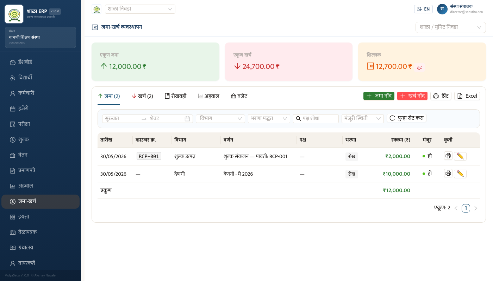
एकूण जमा, एकूण खर्च, शिल्लक — वरती दिसतात
कालानुक्रमे सर्व नोंदी — running balance सहित
मासिक सारांश, प्रकारनिहाय, वार्षिक P&L
नियोजित बजेट विरुद्ध प्रत्यक्ष खर्च — लवकरच येत आहे
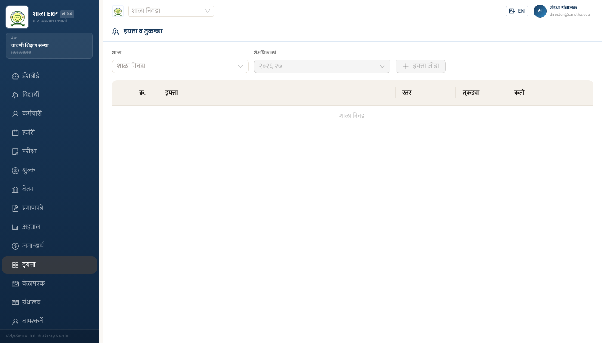
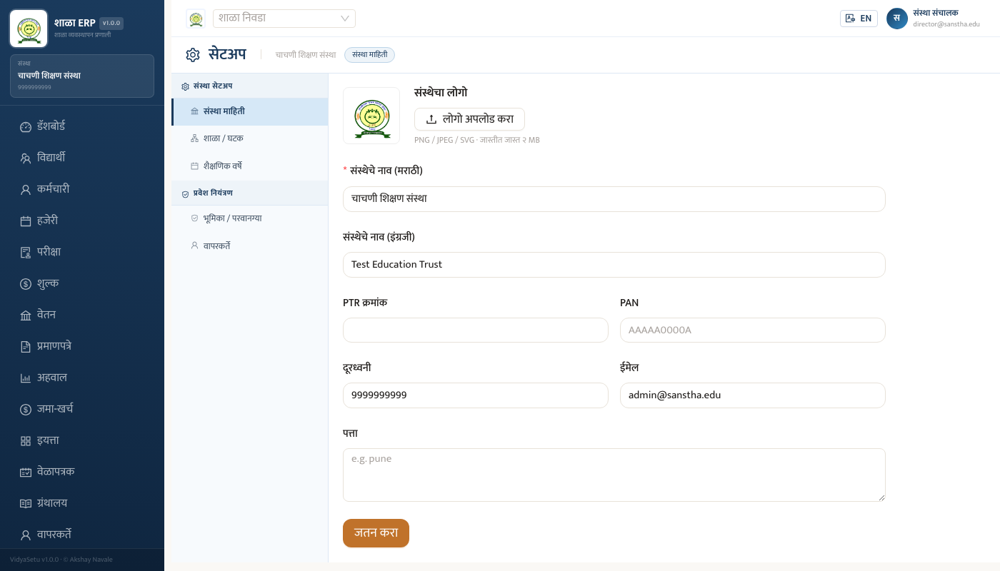
| विभाग | काय सेट करता येते |
|---|---|
| 📋 संस्था माहिती | संस्थेचे नाव (मराठी/इंग्रजी), PTR क्रमांक, UDISE, पत्ता, ईमेल, लोगो अपलोड |
| 🏫 शाळा / घटक | संस्थेच्या अंतर्गत शाळा जोडा, शाळेचे नाव, UDISE, पत्ता |
| 📅 शैक्षणिक वर्षे | शैक्षणिक वर्ष जोडा, चालू वर्ष सेट करा |
| 🔐 भूमिका / परवानग्या | वापरकर्त्यांसाठी भूमिका तयार करा (संचालक / मुख्याध्यापक / लिपिक इ.) |
| 👤 वापरकर्ते | नवीन वापरकर्ता तयार करा, भूमिका द्या, पासवर्ड रीसेट करा |
| विषय | कुठे जायचे |
|---|---|
| तांत्रिक मदत | संस्था IT प्रशासक |
| पासवर्ड रीसेट | सेटअप → वापरकर्ते → संचालक |
| नवीन शाळा जोडणे | सेटअप → शाळा / घटक |
| डेटा बॅकअप | IT प्रशासकाशी संपर्क करा |